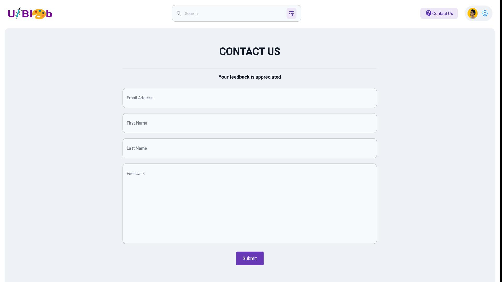

Explore a curated collection of beautiful UI designs for inspiration on UI-Blob. Get ideas for your next project and stay updated on the latest UI trends.
Immerse yourself in a carefully curated selection of UI designs from diverse industries and creative minds. Each design is handpicked for its innovation, aesthetics, and user-centric approach.
UI-Blob provides a visually stunning experience, allowing you to appreciate the intricacies of each design. The platform emphasizes the beauty and functionality of UI elements, serving as a visual feast for design enthusiasts.
Engage with UI designs dynamically enhanced by ReactJS, offering seamless and interactive experiences. Experience the fluidity of animations, transitions, and responsive design principles in action.
Whether you're working on a web application, mobile app, or other digital projects, UI-Blob is a wellspring of inspiration. Discover innovative solutions to common design challenges and explore novel approaches to user interface creation.
UI-Blob keeps you informed about the latest trends in UI design, ensuring that your projects align with contemporary aesthetics and user expectations. Regular updates showcase emerging design patterns, color schemes, and user interaction paradigms.
Catering to both designers and developers, UI-Blob provides insights into the collaborative world of UI/UX. Designers can draw inspiration, while developers can gain valuable insights into implementing dynamic interfaces with ReactJS.

Join a community of design enthusiasts and professionals sharing insights, tips, and discussions related to UI design. UI-Blob fosters a collaborative environment for those passionate about creating exceptional user experiences.